decide frame2026-08-09 · instrument tools/battle_overlap_lib.mjs + battle_decide --mode=overlap|ovsweep · 62-site census, four arms, one build each
The ruler audit found 8 of 57 eye-sorted bodies compromised because one party body stood behind the other, and that neither contrast ruler could see it — the meter renders each body against a cast-free background. This lane measured it properly. It is worse than the audit could know, it is not the body the audit named, and the cause is one sign in the formation.
SOLO = the silhouette a body has against the world (only that body drawn). VIS = the pixels that body is the frontmost thing at in the real frame (whole cast, minus that body). occTeam = 1 − |SOLO ∧ VIS| / |SOLO|. Bodies are opaque, so a SOLO pixel that does not change when the body is removed from the full frame is a pixel a teammate is standing in front of; the lost pixels are attributed by asking whose SOLO mask covers them. occWorld and occTotal come from a third, depth-test-off pass. Occlusion is an intersection, never a ratio of areas — the halo lesson this repo has paid for twice.
The party line at two members runs (−1.05 across, +2.00 deep) in slot units — 27.7° off the depth axis. decide swings the boom −0.30 rad toward the foes so the deciding character is seen three-quarter front. That swing points the lens to within 10.5° of the party line. Lateral separation cos θ·Δu − sin θ·Δv collapses 0.756 m → 0.297 m, under half a body width. Predicted before it was measured; the instrument returned −0.297 m and 10.51°.
Six sites, eleven plans. {} is the shipped shot. Nothing restages, so site, placement, cast phase and world are held fixed.
| plan | s000 water | s002 forest | s041 meadow | s005 forest | s033 crag | s030 water | lateral m | line vs axis |
|---|---|---|---|---|---|---|---|---|
{} | 0.640 | 0.781 | 0.903 | 0.695 | 0.944 | 0.731 | -0.297 | 10.5° |
{"yawOff": 0} | 0.007 | lost | 0.160 | 0.102 | 0.237 | 0.135 | -0.756 | 27.7° |
{"yawOff": 0.1} | 0.234 | 0.418 | 0.366 | 0.265 | 0.405 | 0.398 | -0.609 | 22.0° |
{"yawOff": 0.2} | 0.690 | 0.859 | 0.735 | 0.488 | 0.736 | 0.634 | -0.455 | 16.2° |
{"yawOff": 0.45} | 0.775 | 0.578 | 0.347 | 0.375 | 0.442 | 0.326 | -0.416 | 14.8° |
{"yawOff": 0.6} | 0.623 | 0.450 | 0.106 | 0.104 | 0.226 | 0.142 | -0.297 | 10.5° |
{"keepSafe": null} | 0.637 | 0.759 | 0.889 | 0.645 | 0.845 | 0.704 | -0.297 | 10.5° |
{"keepBias": 1} | 0.512 | 0.553 | 0.540 | 0.306 | 0.522 | 0.475 | -0.297 | 10.5° |
{"keepBias": 0.8} | 0.824 | 0.419 | 0.819 | 0.462 | 0.749 | 0.712 | -0.297 | 10.5° |
{"fov": "rest"} | 0.453 | 0.360 | 0.612 | 0.613 | 0.856 | 0.549 | -0.297 | 10.5° |
{"lead": 0} | 0.874 | 0.556 | 0.883 | 0.582 | 0.788 | 0.814 | -0.297 | 10.5° |
The safe rect is not the cause — keepSafe:null moves maren by ≤0.06 at every site, which refutes the inherited claim. keepBias, fov and lead are second order. yawOff owns it.
| arm | party occTeam ≥10/25/50 | occWorld | occTotal | bodies with no silhouette | foes in frame /124 | foe occTotal ≥10/25/50 | lateral m (p50) | line vs axis (p50) | camDist p50 | axisOk |
|---|---|---|---|---|---|---|---|---|---|---|
| shipped-at-the-time (t=+1) | 53/44/33 | 14/6/0 | 56/48/34 | 0 | 124 | 54/51/37 | 0.297 | 10.5° | 11.09 | 62/62 |
| the flip (t=-1) | 5/4/4 | 16/7/5 | 16/7/5 | 10 | 121 | 52/45/32 | 1.148 | 44.9° | 12.76 | 62/62 |
| flat rank, no seeParty (t=0) | 4/2/1 | 18/6/3 | 23/7/3 | 4 | 122 | 53/45/31 | 0.722 | 72.8° | 11.96 | 62/62 |
| SHIPPED: flat rank + showParty | 4/2/1 | 17/6/3 | 24/7/3 | 4 | 122 | 53/46/30 | 0.722 | 72.8° | 11.96 | 62/62 |
the flip (t=-1) vs shipped, worst party occTotal per site: improved 51, regressed 7, unchanged 4. Regressions: s027 (crag) 0.17→1.00, s032 (water) 0.20→1.00, s040 (crag) 0.30→1.00, s015 (water) 0.73→1.00, s002 (forest) 0.76→0.96, s003 (water) 0.10→0.29, s047 (meadow) 0.02→0.17
flat rank, no seeParty (t=0) vs shipped, worst party occTotal per site: improved 49, regressed 7, unchanged 6. Regressions: s046 (meadow) 0.35→0.63, s061 (forest) 0.23→0.50, s015 (water) 0.73→1.00, s002 (forest) 0.76→0.95, s047 (meadow) 0.02→0.13, s031 (meadow) 0.35→0.42, s007 (meadow) 0.13→0.20
SHIPPED: flat rank + showParty vs shipped, worst party occTotal per site: improved 49, regressed 6, unchanged 7. Regressions: s046 (meadow) 0.35→0.63, s061 (forest) 0.23→0.50, s015 (water) 0.73→1.00, s047 (meadow) 0.02→0.13, s031 (meadow) 0.35→0.42, s007 (meadow) 0.13→0.20
The residual after the fix is world occlusion, not teammates — and its cause is named: stageArena validates every slot from the round eye, and decide swings 0.30 rad off it and pushes in. showParty puts the rest of the party into the shot's own nine-sample visibility test; it fires at 2 of 62 sites and rescues one body that was 95% behind a lamp post.
| site | zone | shipped-at-the-time | shipped now | lateral m | |||||
|---|---|---|---|---|---|---|---|---|---|
| vesper team | maren team | maren total | vesper team | maren team | maren total | before | after | ||
| s000 | water | 0.061 | 0.645 | 0.650 | 0.001 | 0.002 | 0.005 | -0.297 | -0.722 |
| s001 | forest | 0.035 | 0.249 | 0.379 | 0.036 | 0.036 | 0.064 | -0.509 | -0.722 |
| s002 | forest | 0.065 | 0.779 | 0.757 | 0.006 | 0.012 | 0.713 | -0.479 | -0.855 |
| s003 | water | 0.006 | 0.039 | 0.101 | 0.006 | 0.028 | 0.090 | -0.755 | -0.723 |
| s004 | crag | 0.051 | 0.180 | 0.190 | 0.036 | 0.011 | 0.164 | -0.637 | -0.829 |
| s005 | forest | 0.039 | 0.699 | 0.644 | 0.006 | 0.060 | 0.055 | -0.297 | -0.722 |
| s006 | crag | 0.067 | 0.682 | 0.716 | 0.003 | 0.002 | 0.005 | -0.297 | -0.722 |
| s007 | meadow | 0.002 | 0.102 | 0.134 | 0.012 | 0.168 | 0.200 | -0.084 | -0.382 |
| s008 | crag | 0.043 | 0.693 | 0.664 | 0.015 | 0.059 | 0.034 | -0.296 | -0.723 |
| s009 | forest | 0.221 | 0.427 | 0.443 | 0.096 | 0.095 | 0.082 | -0.532 | -0.748 |
| s010 | meadow | 0.114 | 0.855 | 0.768 | 0.041 | 0.062 | 0.038 | -0.296 | -0.723 |
| s011 | meadow | 0.024 | 0.237 | 0.323 | 0.001 | 0.024 | 0.027 | -0.297 | -0.722 |
| s012 | forest | 0.017 | 0.453 | 0.492 | 0.007 | 0.016 | 0.034 | -0.297 | -0.722 |
| s013 | meadow | 0.024 | 0.604 | 0.512 | 0.003 | 0.009 | 0.013 | -0.297 | -0.722 |
| s014 | meadow | 0.109 | 0.657 | 0.561 | 0.021 | 0.037 | 0.116 | -0.403 | -0.722 |
| s015 | water | 0.021 | 0.753 | 0.735 | lost | lost | lost | -0.297 | -0.855 |
| s016 | forest | 0.066 | 0.601 | 0.576 | 0.008 | 0.046 | 0.112 | -0.297 | -0.722 |
| s017 | meadow | 0.036 | 0.272 | 0.323 | 0.025 | 0.055 | 0.116 | -0.297 | -0.722 |
| s018 | crag | 0.044 | 0.446 | 0.431 | 0.006 | 0.030 | 0.036 | -0.297 | -0.722 |
| s019 | meadow | 0.046 | 0.735 | 0.700 | 0.005 | 0.045 | 0.036 | -0.297 | -0.722 |
| s020 | meadow | 0.018 | 0.128 | 0.365 | 0.001 | 0.009 | 0.286 | -0.509 | -0.722 |
| s021 | meadow | 0.061 | 0.691 | 0.707 | 0.000 | 0.001 | 0.007 | -0.296 | -0.723 |
| s022 | forest | 0.001 | 0.012 | 0.019 | 0.000 | 0.002 | 0.007 | -0.756 | -0.757 |
| s023 | forest | 0.087 | 0.777 | 0.778 | 0.001 | 0.003 | 0.007 | -0.297 | -0.722 |
| s024 | forest | 0.064 | 0.732 | 0.760 | 0.001 | 0.005 | 0.136 | -0.296 | -0.829 |
| s025 | forest | 0.072 | 0.640 | 0.647 | 0.064 | 0.058 | 0.043 | -0.402 | -0.722 |
| s026 | meadow | 0.003 | 0.047 | 0.097 | 0.005 | 0.017 | 0.114 | -0.637 | -0.722 |
| s027 | crag | 0.015 | 0.136 | 0.169 | 0.010 | 0.017 | 0.069 | -0.297 | -0.722 |
| s028 | meadow | 0.062 | 0.633 | 0.690 | 0.046 | 0.132 | 0.382 | -0.402 | -0.723 |
| s029 | water | 0.016 | 0.768 | 0.733 | 0.014 | 0.052 | 0.007 | -0.297 | -0.616 |
| s030 | water | 0.112 | 0.746 | 0.683 | 0.024 | 0.062 | 0.028 | -0.297 | -0.722 |
| s031 | meadow | 0.055 | 0.339 | 0.350 | 0.029 | 0.383 | 0.423 | -0.190 | -0.382 |
| s032 | water | 0.007 | 0.112 | 0.198 | 0.009 | 0.006 | 0.037 | -0.084 | -0.722 |
| s033 | crag | 0.147 | 0.941 | 0.886 | 0.072 | 0.084 | 0.001 | -0.297 | -0.722 |
| s034 | meadow | 0.048 | 0.745 | 0.711 | 0.006 | 0.036 | 0.036 | -0.296 | -0.723 |
| s035 | crag | 0.148 | 0.898 | 0.903 | 0.001 | 0.009 | 0.152 | -0.297 | -0.721 |
| s036 | forest | 0.014 | 0.126 | 0.240 | 0.005 | 0.067 | 0.144 | -0.403 | -0.722 |
| s037 | meadow | 0.051 | 0.550 | 0.584 | 0.006 | 0.038 | 0.029 | -0.297 | -0.722 |
| s038 | crag | 0.008 | 0.004 | 0.078 | 0.005 | 0.011 | 0.034 | -0.755 | -0.757 |
| s039 | meadow | 0.132 | 0.771 | 0.751 | 0.051 | 0.071 | 0.023 | -0.297 | -0.722 |
| s040 | crag | 0.075 | 0.277 | 0.301 | 0.006 | 0.034 | 0.070 | -0.509 | -0.723 |
| s041 | meadow | 0.109 | 0.913 | 0.858 | 0.016 | 0.079 | 0.006 | -0.296 | -0.723 |
| s042 | meadow | 0.049 | 0.288 | 0.488 | 0.018 | 0.084 | 0.165 | -0.296 | -0.723 |
| s043 | water | 0.029 | 0.276 | 0.280 | 0.030 | 0.082 | 0.072 | -0.404 | -0.722 |
| s044 | forest | 0.008 | 0.062 | 0.071 | 0.002 | 0.006 | 0.013 | -0.756 | -0.757 |
| s045 | meadow | 0.069 | 0.452 | 0.676 | 0.004 | 0.022 | 0.112 | -0.403 | -0.722 |
| s046 | meadow | 0.003 | 0.033 | 0.350 | 0.000 | 0.007 | 0.627 | -0.637 | -0.722 |
| s047 | meadow | 0.003 | 0.005 | 0.024 | 0.010 | 0.022 | 0.128 | -0.084 | -0.722 |
| s048 | forest | 0.083 | 0.783 | 0.784 | 0.003 | 0.008 | 0.015 | -0.296 | -0.723 |
| s049 | meadow | 0.048 | 0.758 | 0.712 | 0.010 | 0.048 | 0.053 | -0.296 | -0.723 |
| s050 | meadow | 0.138 | 0.841 | 0.843 | 0.001 | 0.004 | 0.015 | -0.296 | -0.723 |
| s051 | meadow | 0.135 | 0.820 | 0.817 | 0.001 | 0.001 | 0.004 | -0.296 | -0.723 |
| s052 | meadow | 0.062 | 0.744 | 0.765 | 0.001 | 0.015 | 0.037 | -0.297 | -0.722 |
| s053 | crag | 0.020 | 0.409 | 0.414 | 0.009 | 0.007 | 0.194 | -0.403 | -0.850 |
| s054 | forest | 0.007 | 0.100 | 0.131 | 0.003 | 0.063 | 0.076 | -0.756 | -0.757 |
| s055 | forest | 0.082 | 0.662 | 0.662 | 0.013 | 0.044 | 0.064 | -0.297 | -0.722 |
| s056 | crag | 0.053 | 0.206 | 0.061 | 0.024 | 0.048 | 0.067 | -0.637 | -0.722 |
| s057 | meadow | 0.014 | 0.375 | 0.383 | 0.031 | 0.040 | 0.079 | -0.297 | -0.722 |
| s058 | forest | 0.087 | 0.528 | 0.713 | 0.001 | 0.005 | 0.082 | -0.403 | -0.756 |
| s059 | meadow | 0.046 | 0.661 | 0.668 | 0.000 | 0.003 | 0.022 | -0.296 | -0.723 |
| s060 | meadow | 0.179 | 0.536 | 0.610 | 0.024 | 0.059 | 0.124 | -0.297 | -0.722 |
| s061 | forest | 0.013 | 0.079 | 0.226 | 0.002 | 0.000 | 0.048 | -0.532 | -0.849 |
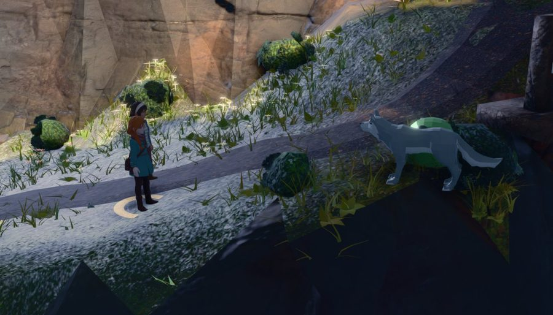
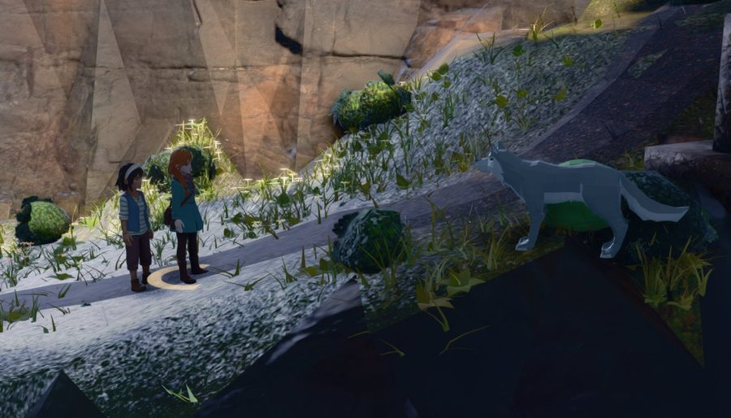
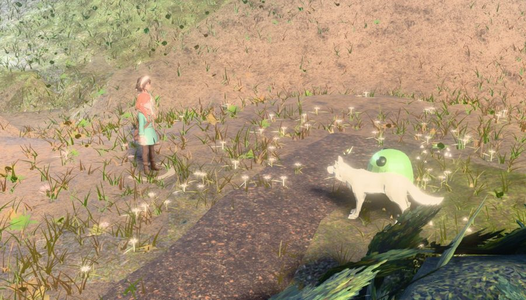
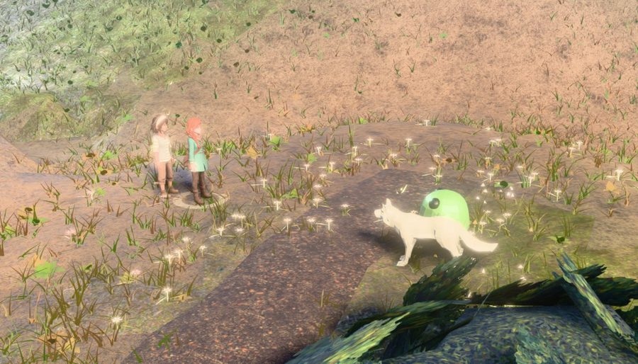
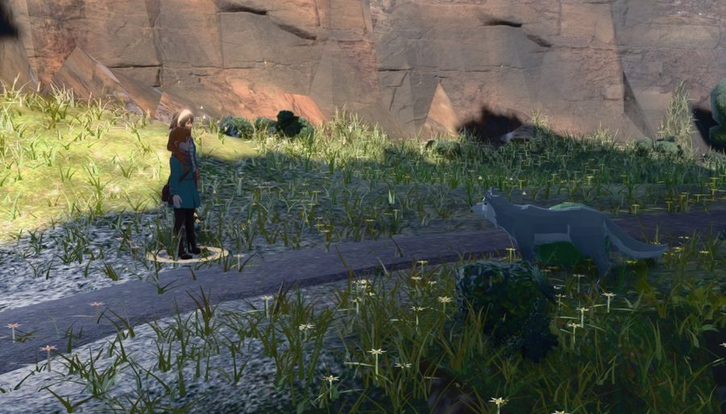
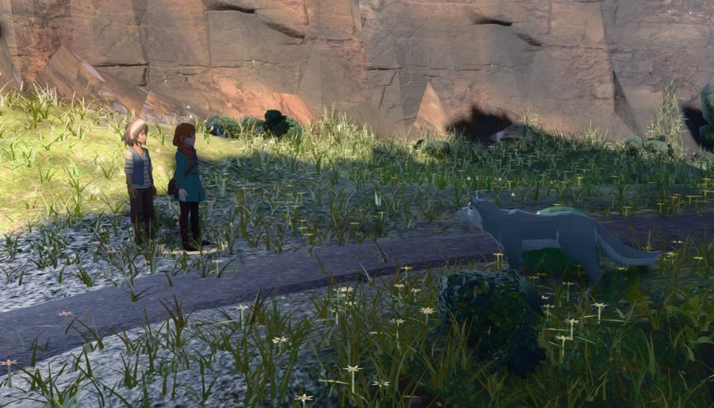
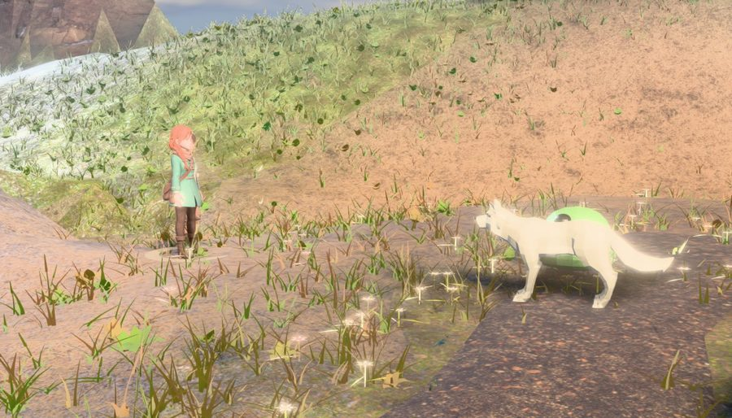
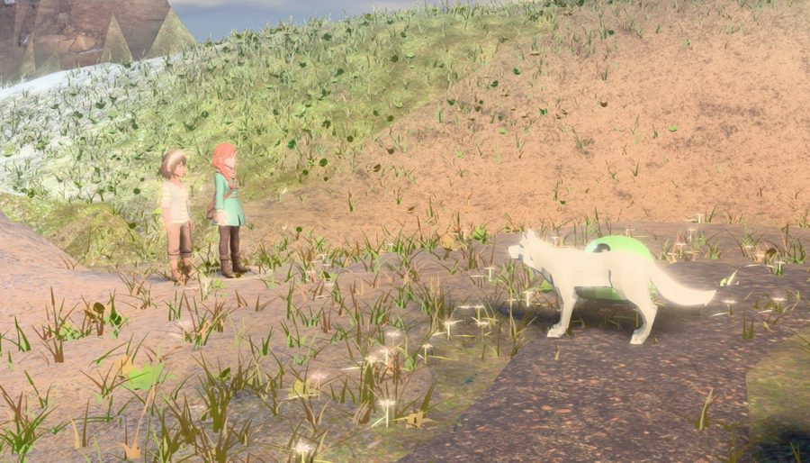
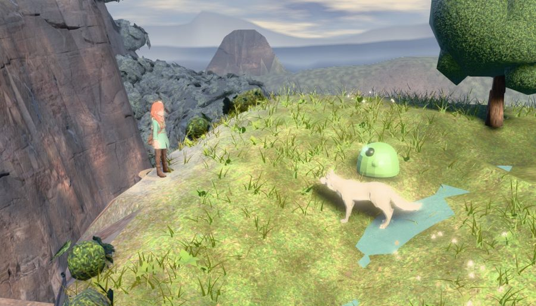
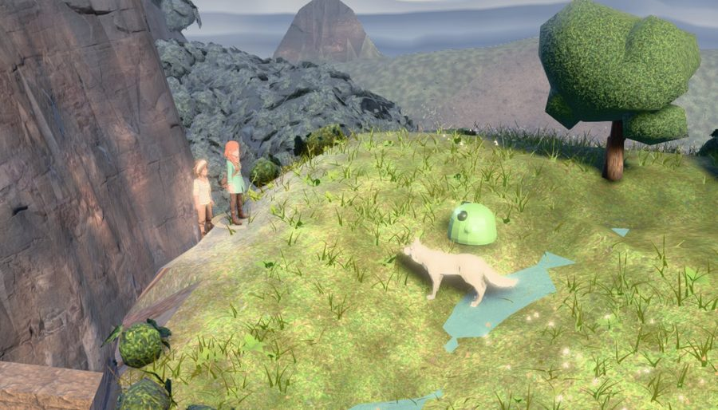
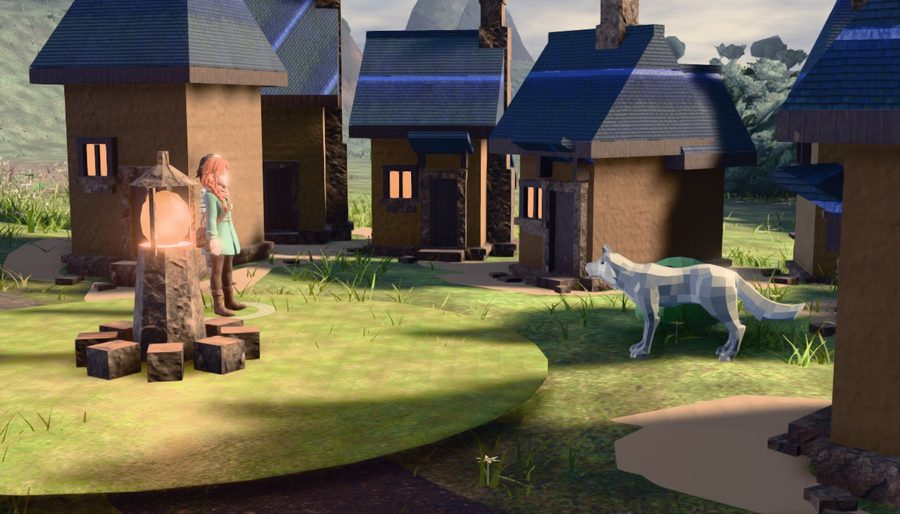
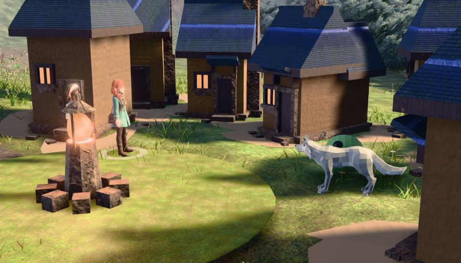
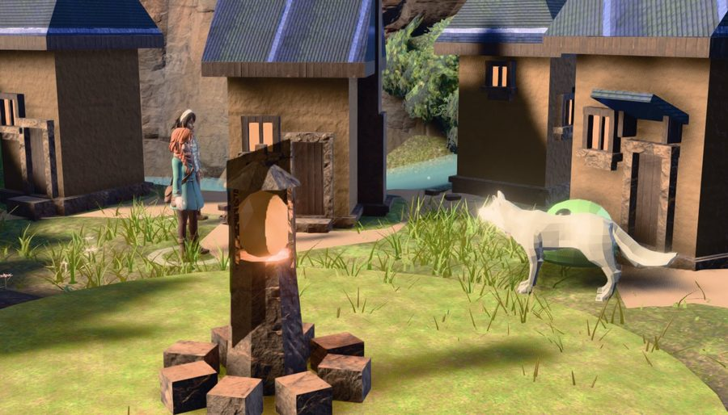
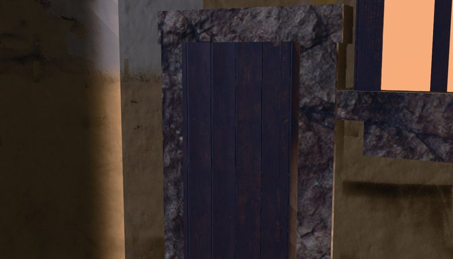
slotsFor gives the foes ax = foeX + |i − (n−1)/2| · foeChevron. The absolute value makes the chevron a V for three foes and inert for two: at n=2 both foes take the same across-axis coordinate and differ only in depth, so the pair stands in single file down the arena axis. Measured over the census, the second foe is ≥25% eaten by the first at 50 of 62 sites and ≥50% at 36 — worse than the party ever was. The formation fix does not touch it (45–46 sites after). It is left here rather than fixed because the foe line is the keep set, the show set at strike/impact and one half of the 180° ordering test, and because a wolf's projected width is nothing like its slot w: separating a pair of foes is a formation question with a much larger blast radius than one sign.